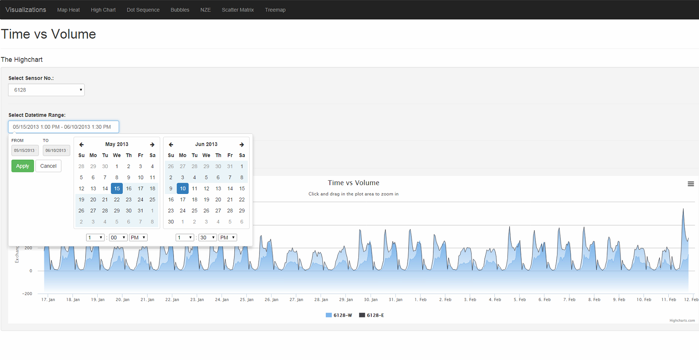

Traffic Data Visualization
DDOT collects significant quantities of traffic and incident data. In this project, we aimed on developing a tool to visualize the data. The visualization shows the spatio-temporal evolution of the transportation system in addition to using macroscopic fundamental diagrams to display the network status.

Several interactive visualization schemes based on d3.js and HighCharts were developed to visualize the traffic data. These charts show the spatio-temporal trend and the hierarchical relations of the intersections and the corridors. Partial of development code is available at https://github.com/ddot-toa/Traffic_data_Viz.
- Date: 2014 - present
- Development Tools:
JavaScript, jquery, d3.js, HighCharts, Python, Flask, MS SQL Server, MS IIS